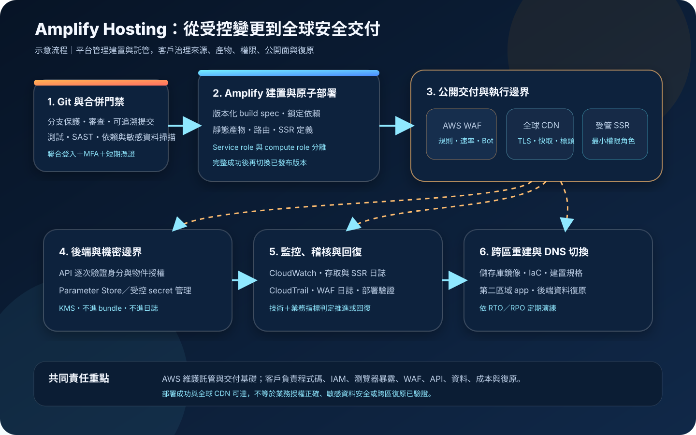

AWS Amplify Hosting：前端持續部署、邊緣交付與安全治理
AWS Amplify Hosting 將 Git 分支、建置流程、原子部署、全球內容傳遞、網域與前端框架整合成受管託管流程。它能縮短網站交付路徑，但程式碼、依賴、建置權限、瀏覽器暴露資料、SSR 執行權限、流量防護與復原驗證仍由客戶治理。
作者：Dr. William｜查閱與發布：2026-10-15
服務定位
AWS Amplify Hosting 是以 Git 為核心的 Web 應用託管與持續部署服務。團隊連接 GitHub、GitLab、Bitbucket 或 AWS CodeCommit 儲存庫後，可將分支映射為獨立環境；每次核准變更觸發建置，完整產物完成後再以原子方式發布到 AWS 全球內容傳遞網路。
服務支援靜態網站產生器、SPA 與多種 SSR 框架，也提供自訂網域、TLS、預覽環境、重新導向與重寫、自訂回應標頭、存取限制、監控，以及與 AWS WAF 的直接整合。它不是通用虛擬主機，也不會替代原始碼審查、後端 API 授權、資料庫治理、依賴修補或業務層復原。
核心概念與服務邊界
交付模型
- App：託管設定的主要資源，包含儲存庫連線、網域、建置與監控設定。
- Branch：可部署單位；production、staging、feature branch 應具不同公開性、角色與後端環境。
- Build specification：定義安裝、建置、測試、快取與產物目錄；應版本化並接受程式碼審查。
- Artifact：部署產物可能包含靜態檔、SSR compute、路由與 image optimization 定義。
- Atomic deployment：完整部署完成後才切換版本，避免新舊檔案混合，但不等於應用功能一定正確。
- Global delivery：內容透過全球 CDN 交付；快取標頭、失效策略與動態運算仍影響效能和成本。
應用能力與客戶決策
- 靜態／SPA：建置後檔案直接交付；前端公開檔案不可包含敏感值。
- SSR：請求可進入受管運算；執行權限、輸入驗證、相依套件與伺服器端輸出須治理。
- 網域：可連接自訂網域與受管憑證；DNS 所有權、CAA、切換與懸空記錄仍需管理。
- 預覽：Pull request 可建立獨立 URL；測試資料、搜尋引擎索引與公開存取必須受控。
- 路由：301、302、200 rewrite 與 404 規則依序評估；錯誤順序可能造成繞過或 SEO 問題。
- WAF：可直接關聯 global Web ACL；規則、例外、日誌、誤攔截與額外費用由客戶負責。
適合與不適合的使用情境
適合
- React、Vue、Angular 等 SPA，或 Hugo、Jekyll、Gatsby 等靜態網站，需要 Git push 後自動建置與發布。
- 支援框架的 SSR 或混合式網站，需要靜態內容、伺服器端呈現、image optimization 與 CDN 整合。
- 需要 production、staging、feature branch 與 pull request preview，以縮短前端審查和驗收週期。
- 希望用自訂網域、TLS、重新導向、自訂安全標頭、監控與 WAF 建立單一受管入口。
- 團隊願意把建置設定、依賴鎖定、測試、安全檢查與復原流程納入版本控制。
不適合或不能單獨完成
- 需要管理自訂作業系統、常駐背景程序、任意網路代理、特殊 runtime 或長時間運算的通用主機工作負載。
- 應用需要未受支援的 SSR 能力、框架版本或平台原語，且無法接受 adapter 或部署規格限制。
- 需要完全私有、只在企業內網可達的前端入口，但架構未另行設計身分感知代理或私有交付層。
- 把前端託管誤當成 API 授權、資料列級存取控制、資料庫備份、惡意程式防護或完整 DDoS／Bot 治理解法。
- 無法控制第三方建置腳本與套件，或會把正式機密注入可下載的前端 bundle、source map、日誌或預覽環境。
示意故事案例：會員入口的分支交付與受控 SSR
以下為示意案例，不代表特定企業或正式部署。 一個會員服務團隊使用 Next.js 建立公開入口。main 分支對應 production，develop 對應 staging；pull request preview 只使用去識別測試資料，並啟用存取限制與禁止索引。每次變更先執行單元測試、瀏覽器測試、套件與程式碼掃描、敏感資料檢查，再產生部署產物。
靜態資產由 CDN 交付，登入後頁面由 SSR 產生。SSR compute role 只能讀取指定 Parameter Store 路徑與呼叫單一內部 API，不具備管理 Amplify、IAM 或其他環境的權限。公開組態可於建置時提供；敏感資料不寫入前端變數、bundle、source map 或建置日誌。所有後端 API 仍逐次驗證使用者身分與物件授權。
自訂網域前方關聯 AWS WAF，先以 count 模式觀察 managed rules、速率規則與誤攔截，再分階段啟用阻擋。團隊設定 Content-Security-Policy、HSTS、frame 與 MIME 防護標頭，CloudWatch 監控 4xx、5xx、延遲、資料傳輸和 SSR 指標，CloudTrail 保留控制面變更。復原方案保存儲存庫鏡像、鎖定檔、建置規格、網域與路由設定，並在第二區域建立可重建的待命 app，定期演練 DNS 切換。

建置與運作流程
- 定義需求：確認靜態、SPA、SSG、SSR 或混合模式，記錄流量、延遲、資料分類、SEO、區域、RTO、RPO、合規與預算。
- 驗證框架：確認框架版本、adapter、SSR 功能、產物大小、請求時間與平台配額符合 Amplify Hosting 支援範圍。
- 分離環境：將 production、staging、development 與 preview 分支映射到不同後端環境；高風險正式環境使用獨立 AWS 帳號。
- 保護儲存庫：啟用分支保護、必要審查、簽署或可追溯提交、合併門禁與第三方整合最小範圍。
- 版本化建置：將 amplify.yml、customHttp.yml、redirect 規則、鎖定檔與 runtime 版本納入儲存庫。
- 建立供應鏈門禁：執行測試、SAST、依賴掃描、SBOM、授權檢查與敏感資料掃描；不允許未固定版本的任意安裝腳本。
- 最小化 IAM：管理者與部署者使用聯合登入、MFA 與短期憑證；限制 Amplify service role、SSR compute role 與可管理的 app／branch。
- 管理組態：區分可公開組態與敏感資料；敏感值使用 Amplify Gen 2 secret 管理或 Parameter Store，SSR 存取使用專用角色。
- 設定網域：驗證 DNS 所有權、TLS、CAA、根網域與 www 策略，記錄遷移 TTL、回復與舊記錄清理程序。
- 設定路由：按精確到廣泛順序審查 301、302、rewrite 與 404；測試 query string、SPA fallback、舊網址與開放重新導向。
- 設定安全標頭：部署 HSTS、Content-Security-Policy、frame、MIME、Referrer-Policy 與 Permissions-Policy，先在 staging 驗證第三方資源相容性。
- 保護公開入口：評估 AWS WAF managed rules、速率限制、IP／地理條件與 Bot 控制；先 count 再 block，建立例外到期日。
- 建立觀測：設定 CloudWatch 指標與告警、存取日誌、SSR 日誌保留與去敏、集中 CloudTrail、部署失敗與 WAF 異常通知。
- 驗證發布：每次 production 部署執行 smoke test、登入與核心交易檢查、標頭與 SEO 驗證，再保留前一版 commit 和回復程序。
- 演練復原：測試壞版回復、網域錯誤、WAF 誤攔截、SSR 權限撤銷、區域中斷與第二區域重建。
成本、可用性與維運考量
Amplify Hosting 依使用量計費，主要項目包括建置分鐘、CDN 儲存量、對外資料傳輸，以及 SSR 請求數和執行時間。啟用 WAF 時，另有每個 Amplify app 的整合費用及 AWS WAF 本身費用。實際單價、免費額度與區域條件應以查閱當日官方價格頁為準。
建置成本受提交頻率、開發者數量、preview branches、快取命中、monorepo 範圍、測試時間與 build instance 規格影響；託管成本受頁面大小、圖片、source map、快取 TTL、Bot 流量與 SSR 比例影響。應設定預算、異常流量告警、preview 自動刪除、產物瘦身與合理快取，而不是只估算正式站正常訪客。
原子部署可避免部分更新，但無法保證新版本的 API 契約、資料遷移、身分流程或第三方依賴正確。全球 CDN 改善內容交付，仍不等於 app 本身具備跨區控制面與狀態復原。儲存庫、建置設定、網域規則、SSR 角色、後端資料與第二區域重建程序必須獨立保存並實測。
Amplify Hosting 特有資安風險與控制
- 儲存庫連線範圍過大：限制 Git provider app 可讀取的組織與儲存庫，定期移除未使用連線並監控授權變更。
- 分支即環境造成漂移：明確記錄 branch、網域、後端、角色和公開性映射，以 IaC 或可審查設定保存。
- Preview 洩漏測試內容：禁止使用正式資料，啟用存取限制、noindex 與自動刪除；公開儲存庫不得把高權限 app-level SSR role套用到 preview。
- 惡意 pull request 取得建置權限：不讓未受信任程式碼在具敏感權限的建置環境執行；外部貢獻採無權限檢查或隔離流程。
- 建置腳本供應鏈攻擊：固定 runtime 與套件版本、保留鎖定檔、審查 postinstall、使用可信 registry 並產生 SBOM。
- 建置環境變數被打包：任何會進入瀏覽器的前端變數都視為公開資料；敏感資料改由伺服器端角色和受控服務取得。
- SSR 角色權限過寬：每個 app 或高敏感 branch 使用專用 compute role，只允許必要動作與資源，限制跨帳號和管理權限。
- SSR 程式碼暴露執行權限：修補框架與依賴、驗證輸入、限制輸出與錯誤資訊，防範遠端程式執行及伺服器端請求偽造。
- 前端 source map 洩漏：正式站按除錯需求決定是否公開 source map；若保留，須確認不含內部路徑、原始註解或敏感資料。
- Rewrite 規則造成繞過：依順序測試精確路徑、萬用規則與外部目的地，避免驗證頁被 200 rewrite 覆蓋或形成開放重新導向。
- 安全標頭僅存在文件：以正式 URL 自動驗證 CSP、HSTS、frame、MIME 與 referrer 設定，將缺失視為發布失敗。
- 自訂網域接管風險：app 刪除、分支移除或供應商遷移時同步清理 DNS；監控懸空 CNAME 與未使用子網域。
- WAF 規則直接阻擋正式流量：新規則先 count、分析 sample 與日誌，再漸進 block；例外必須記錄負責人、理由和到期日。
- Bot 或攻擊流量放大費用：設定速率規則、快取、預算與異常資料傳輸告警；WAF 不能取代應用層授權與資源配額。
- 日誌含個人或驗證資料：禁止在建置、SSR、存取與 WAF 日誌記錄敏感欄位，設定遮罩、KMS、保留期與最小查閱權限。
- 後端公開面未被前端保護：API Gateway、AppSync、ALB 或其他 API 必須自行驗證身分、授權、節流與輸入，不能信任請求來自網站。
- 單區部署誤認為全球備援：CDN 節點不等於應用控制面、SSR 與後端跨區；準備第二區域 app、後端資料復原與 DNS 切換。
- 回復只重跑最新建置：保存已驗證 commit、鎖定檔、建置映像版本與前一版設定，確認能回復到已知良好產物。
共同責任邊界
AWS 負責 Amplify Hosting 服務控制面、受管建置與託管基礎、全球交付基礎及其實體安全。客戶負責原始碼、框架與第三方依賴、儲存庫權限、建置腳本、分支策略、IAM、SSR compute role、前端與伺服器端資料暴露、網域、路由、安全標頭、WAF 規則、日誌內容、成本、後端資料保護與復原演練。
Amplify 的原子部署、受管 TLS、CDN 與框架整合不會自動建立安全的業務流程。瀏覽器送出的每個請求仍是不可信輸入；後端必須重新驗證身分與物件授權。SSR 取得 AWS 資源存取能力後，應用弱點可能直接擴大為雲端權限風險，因此最小權限、短期憑證、CloudTrail、CloudWatch 與事件回應不可省略。
上線與維運可執行檢查清單
- □ 已確認框架、版本、SSR 功能、adapter、產物限制與 Amplify Hosting 支援範圍。
- □ production、staging、development 與 preview 分支的後端、角色、網域與公開性已分離。
- □ Git provider 連線只涵蓋必要儲存庫，main 分支具必要審查與合併門禁。
- □ amplify.yml、customHttp.yml、路由規則、鎖定檔與 runtime 版本已納入版本控制。
- □ 建置已執行測試、SAST、依賴掃描、SBOM、授權與敏感資料檢查。
- □ 管理者與部署者使用聯合登入、MFA 與短期憑證，root 不用於日常操作。
- □ Amplify service role 與 SSR compute role 已分離，且只能存取指定 app、branch 與後端資源。
- □ 公開前端 bundle、source map、建置產物與日誌均未包含敏感資料。
- □ SSR 使用專用角色取得必要資源，未把敏感值寫入前端或可下載產物。
- □ Preview 不使用正式資料，具存取限制、noindex、權限隔離與自動刪除。
- □ 自訂網域、TLS、CAA、根網域／www、DNS TTL、切換、回復與清理程序已驗證。
- □ 301、302、rewrite 與 404 規則已測試順序、query string、SPA fallback 與外部目的地。
- □ CSP、HSTS、frame、MIME、Referrer-Policy 與 Permissions-Policy 已在正式 URL 驗證。
- □ WAF 規則先以 count 驗證，速率、managed rules、例外到期與誤攔截處理已建立。
- □ 後端 API 獨立執行身分驗證、物件授權、輸入驗證、節流與安全記錄。
- □ CloudWatch 指標與告警涵蓋 4xx、5xx、延遲、資料傳輸、SSR 與部署失敗。
- □ CloudTrail、存取日誌、SSR 日誌與 WAF 日誌已集中保存、去敏、加密並設定保留期。
- □ 已估算建置分鐘、preview、CDN 儲存、資料傳輸、SSR 請求／時間與 WAF 費用。
- □ 預算、異常流量、建置時間、產物大小與 preview 數量具可執行告警和上限。
- □ 每次 production 發布後自動執行核心流程、標頭、SEO、網域與可觀測性檢查。
- □ 已保存已知良好 commit、設定與依賴，可執行壞版回復及完整重建。
- □ 已演練 WAF 誤攔截、SSR 權限撤銷、網域故障、區域中斷與跨區 DNS 切換。
AWS 官方一手來源
- Welcome to AWS Amplify Hosting（查閱：2026-10-15）
- Getting started with deploying an app to Amplify Hosting（查閱：2026-10-15）
- Amplify Hosting deployment specification（查閱：2026-10-15）
- Adding an SSR Compute role（查閱：2026-10-15）
- Using environment variables in an Amplify application（查閱：2026-10-15）
- Setting up redirects and rewrites（查閱：2026-10-15）
- Setting custom headers（查閱：2026-10-15）
- Firewall support for Amplify hosted sites（查閱：2026-10-15）
- Monitoring an Amplify application（查閱：2026-10-15）
- Security in Amplify（查閱：2026-10-15）
- How Amplify works with IAM（查閱：2026-10-15）
- AWS Amplify Pricing（查閱：2026-10-15）
- AWS Well-Architected Security Pillar｜Shared responsibility（查閱：2026-10-15）
內容說明
本文依查閱日可用的 AWS 官方文件整理，作為基礎學習與架構討論材料；實際部署仍須依最新框架支援、區域、配額、價格、建置環境、SSR 功能、網域、WAF、資料分類、合規要求與復原演練結果調整。